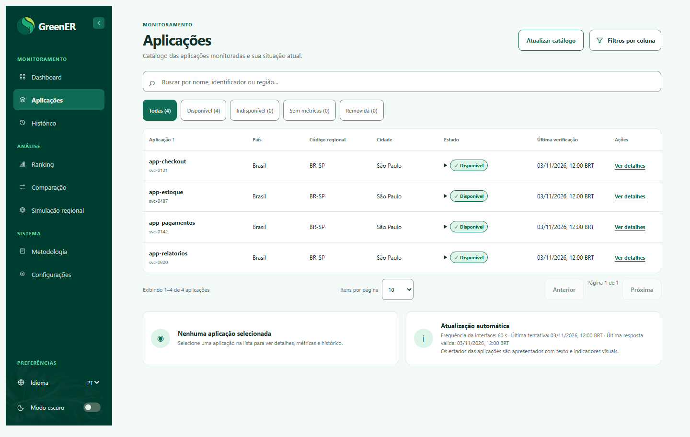
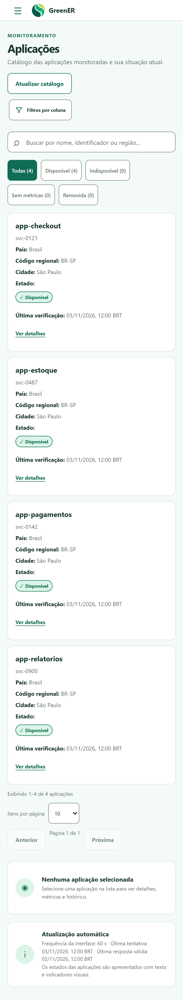
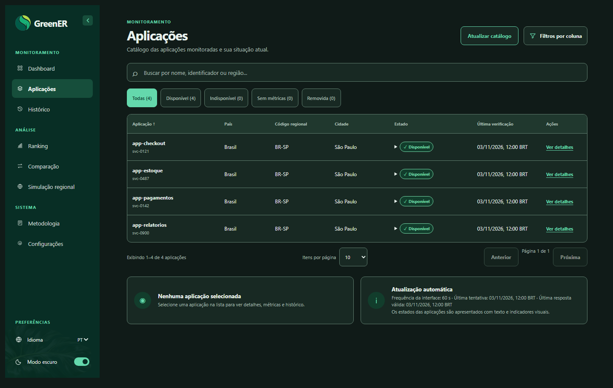
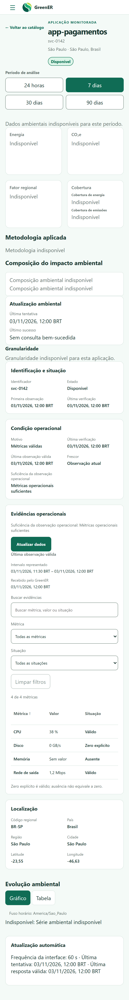
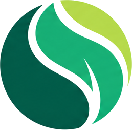

Um novo ponto de vista.

Continue.

Mude a perspectiva.

O foco continua.


GreenERKeep track. Keep it GreenER.ESTUDO DE MOVIMENTO · V2Interface real · Dados ilustrativos





GreenERKeep track. Keep it GreenER.